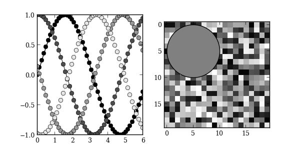

A key feature of mpltools is the ability to set “styles”—essentially, stylesheets that are similar to matplotlibrc files. This example demonstrates the “grayscale” style, which changes all colors that are defined as rc parameters to grayscale. Note, however, that not all plot elements default to colors defined by an rc parameter.
import numpy as np
import matplotlib.pyplot as plt
from mpltools import style
from mpltools import layout
def color_cycle_example(ax):
L = 6
x = np.linspace(0, L)
ncolors = len(plt.rcParams['axes.color_cycle'])
shift = np.linspace(0, L, ncolors, endpoint=False)
for s in shift:
ax.plot(x, np.sin(x + s), 'o-')
def image_and_patch_example(ax):
ax.imshow(np.random.random(size=(20, 20)), interpolation='none')
c = plt.Circle((5, 5), radius=5, label='patch')
ax.add_patch(c)
style.use('grayscale')
figsize = layout.figaspect(0.5)
fig, (ax1, ax2) = plt.subplots(ncols=2, figsize=figsize)
color_cycle_example(ax1)
image_and_patch_example(ax2)
plt.show()
Python source code: download (generated using mpltools 0.1dev)